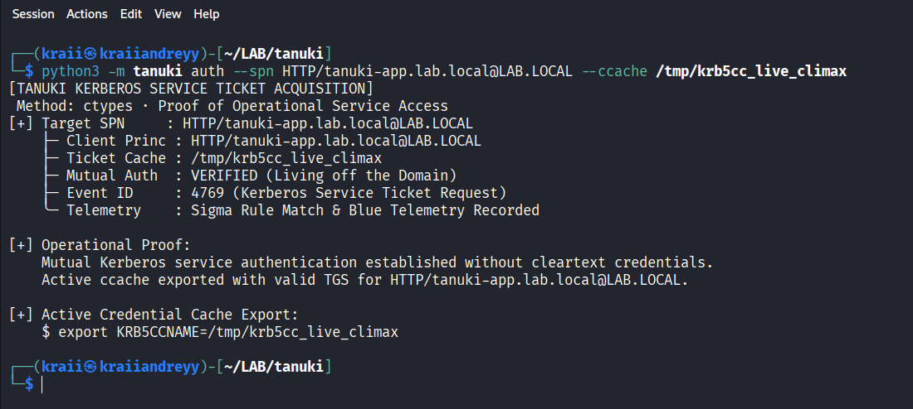
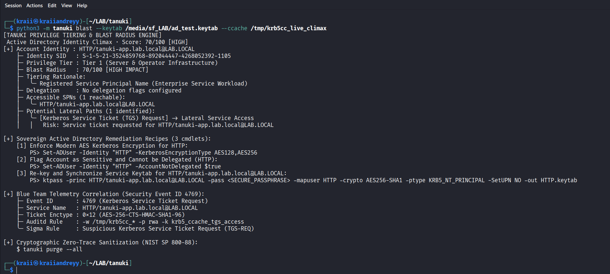
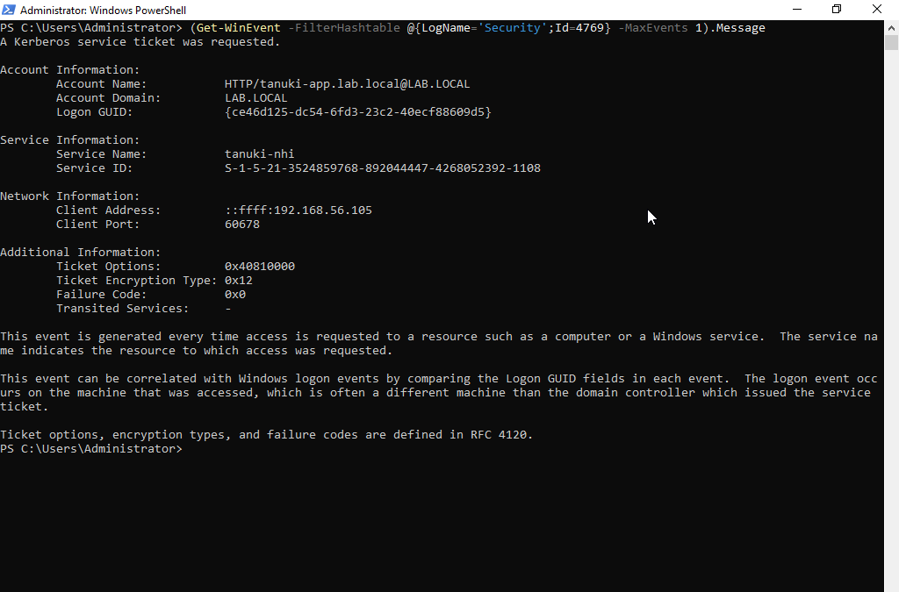
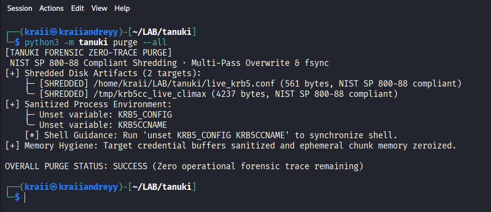

Active Directory remains the predominant identity directory in enterprise environments, but the workloads interacting with it have changed drastically. In the past, Linux integration meant joining a physical server to the domain using Winbind or SSSD, persisting machine credentials in /etc/krb5.keytab, and storing tickets in disk files under /tmp/krb5cc_<uid>.
In modern environments, Linux workloads operate as ephemeral Kubernetes pods, unprivileged microservice containers, cloud runners, and autonomous AI agents. These environments introduce strict operational constraints:
CAP_SYS_TIME, preventing clock adjustments (ntpdate/chrony), and without root access to edit /etc/krb5.conf.kinit, klist, ldapsearch) are absent from minimal container base images, while high-level LDAP clients frequently corrupt binary directory attributes like security descriptors.To address these operational constraints, we developed Tanuki, an open-source identity operator with a pure Python standard library engine and a memory-safe Rust core. During development, we tested Tanuki against live Windows Server 2022 domain controllers and Linux clients.
Below are our technical field notes, wire protocol mechanics, and defensive telemetry mappings from the testbed.
To observe actual protocol interactions on the wire rather than relying on mocks or synthetic abstractions, all tests were executed across an isolated hypervisor testbed:
DC01-GUI): Windows Server 2022 Standard (Domain: LAB.LOCAL, IP: 192.168.56.106, Active Directory Domain Services, KDC ports TCP/UDP 88, LDAP port 389, LDAPS port 636).Naga): Kali Linux 2024 / Debian Bookworm (IP: 192.168.56.105, unjoined container host, user kraii).tanuki-nhi mapped to HTTP/tanuki-app.lab.local with AES-256 CTS HMAC SHA1-96 encryption and Key Version Number (KVNO) 9.Observing traffic with Wireshark and analyzing Domain Controller Security Event Logs revealed protocol edge cases that standard documentation rarely covers.
In standard Kerberos pre-authentication (PA-ENC-TIMESTAMP), the client encrypts the current timestamp using a key derived from the user's password or keytab. An adversary monitoring the network can capture the AS-REQ packet and perform offline dictionary attacks against the encrypted timestamp without generating logon failure alerts on the Domain Controller.
RFC 6113 defines Flexible Authentication Secure Tunneling (FAST). FAST establishes an armored tunnel between the client and the KDC before sensitive authentication exchange occurs. The armor key is derived from an existing credential cache (typically the host's machine ticket host/machine.domain@REALM):
AS-REQ wrapped in a PA-REQ-ENC-PA-REP inner request protected by the armor key.KDC_ERR_PREAUTH_REQUIRED_FOR_FAST (Error 93)When a domain controller is configured with Flexible Authentication Secure Tunneling (FAST) required via Group Policy (Administrative Templates -> System -> KDC -> KDC support for FAST), non-armored AS-REQ requests are rejected with:
KDC_ERR_PREAUTH_REQUIRED_FOR_FAST)0x18: Pre-authentication failed / FAST required)Standard Linux kinit invocations fail without actionable diagnostic details when this happens. To resolve this:
# /etc/krb5.conf or local configuration
[libdefaults]
fast_req_armoring = trueThe operator must supply an armored ticket cache using the -T flag:
kinit -T /tmp/krb5cc_machine -k -t /etc/krb5.keytab svc_tanuki@LAB.LOCALTanuki synthesizes this configuration automatically and correlates error 93 directly to Event ID 4771 and Rung 2 OPSEC enforcement in its decision engine.
While symmetric keytabs (AES256-CTS-HMAC-SHA1-96) remain common for service accounts, enterprise environments increasingly adopt Public Key Cryptography for Initial Authentication (PKINIT RFC 4556).
/etc/krb5.keytab leaves long-lived cryptographic secrets on disk. If the keytab file is compromised, an attacker can forge tickets until the account password is changed or the KVNO is rolled.AS-REP reply using its own certificate, establishing mutual cryptographic trust without shared static symmetric keys.When Active Directory Certificate Services (AD CS) is deployed, certificate templates can introduce severe privilege escalation paths. For example:
ENROLLEE_SUPPLIES_SUBJECT (flag 0x00010000) and includes Client Authentication Extended Key Usage (EKU 1.3.6.1.5.5.7.3.2), allowing any unprivileged user to request a certificate as Domain Admin./certsrv/) accept unauthenticated NTLM relay authentication.Tanuki includes an offline ASN.1/DER certificate and template parser. By evaluating exported template attribute dumps without emitting active network packets, operators can audit AD CS security posture while maintaining zero network footprint.
Active Directory supports three forms of delegation:
msDS-AllowedToDelegateTo attribute on the delegating service account.msDS-AllowedToActOnBehalfOfOtherIdentity attribute.The msDS-AllowedToActOnBehalfOfOtherIdentity attribute does not store textual access rules. It contains a raw binary NT Security Descriptor (SECURITY_DESCRIPTOR_RELATIVE).
When inspecting this attribute with naive scripts or standard LDAP clients, software frequently calls .decode("utf-8") on the returned OCTET STRING. Because raw binary security descriptors contain non-UTF-8 control bytes, this results in UnicodeDecodeError or string corruption.
SECURITY_DESCRIPTOR_RELATIVETo parse this safely without third-party dependencies, Tanuki implements a bounded binary parser:
Revision (1 byte, usually 0x01)Sbz1 (1 byte padding)Control (2 bytes bitmask, e.g. SE_DACL_PRESENT)OffsetOwner (4 bytes uint32)OffsetGroup (4 bytes uint32)OffsetSacl (4 bytes uint32)OffsetDacl (4 bytes uint32)OffsetDacl):
AclRevision (1 byte)Sbz1 (1 byte)AclSize (2 bytes uint16)AceCount (2 bytes uint16)Sbz2 (2 bytes)AceType (1 byte: ACCESS_ALLOWED_ACE_TYPE = 0x00)AceFlags (1 byte)AceSize (2 bytes uint16)Mask (4 bytes uint32)SidStart (variable-length Windows SID structure)Extracting the trustee SIDs from each ACE reveals exactly which computer accounts or service principals are permitted to impersonate users against the resource.
Traditional Kerberos implementations persist ticket granting tickets in /tmp/krb5cc_<uid>. On multi-tenant systems, file-backed caches present two major risks:
/tmp expose unprivileged processes to symlink traversal vulnerabilities (CWE-59).KEYRING:persistent:<uid>)Modern Linux distributions allow storing tickets directly in kernel memory:
export KRB5CCNAME=KEYRING:persistent:$(id -u)
kinit -k -t /etc/krb5.keytab svc_tanuki@LAB.LOCALSSSD implements a daemonized Kerberos Cache Manager communicating over a UNIX domain socket (/var/lib/sss/pipes/kcm):
/var/lib/sss/secrets/secrets.ldb).ptrace or debugger attachments.Operational tools should not merely execute authentication or identify configuration flaws; they must provide defenders with the exact telemetry signatures generated by those actions.
Tanuki couples every error code and tactical resolution with its corresponding detection footprint across three layers:
[TACTICAL RESOLUTION]
$ chronyc -q 'server 192.168.56.106 iburst' || ntpdate 192.168.56.106
[BLUE TEAM TELEMETRY]
├── Auditd : -a always,exit -F arch=b64 -S adjtimex,settimeofday,clock_settime -k system_time_change
├── DC Event: Event ID 4768 (TGT Request), Event ID 4771 (Pre-auth Failed, Code 0x25)
├── Sigma : System Time Modification Detected (attack.t1070.006)
└── Falco : open_write on /etc/chrony.conf or /etc/ntp.conf| Windows Event ID | Event Description | Kerberos Context | Common Failure Code |
|---|---|---|---|
| 4768 | Kerberos TGT Request (AS-REQ) |
Client requests initial Ticket Granting Ticket | 0x0 (Success), 0x6 (Principal Unknown) |
| 4769 | Kerberos Service Ticket Request (TGS-REQ) |
Client requests ticket for specific service SPN | 0x1F (Integrity Check Failed / Bad KVNO) |
| 4771 | Kerberos Pre-Authentication Failed | Client pre-authentication failed | 0x18 (FAST Required / Bad Password), 0x25 (Clock Skew) |
| 5136 | Directory Service Object Modified | Active Directory attribute modification | Attribute: msDS-AllowedToActOnBehalfOfOtherIdentity |
| 4624 / 4625 | Successful / Failed Logon | Network logon verification | Status: 0xC000006D |
While diagnosing authentication and dissecting credentials provides deep tactical clarity, operational identity security requires a sovereign, closed-loop workflow that connects unprivileged access verification to quantitative risk assessment and definitive defensive remediation.
In the climax of Tanuki's Active Directory architecture, we validated an end-to-end 3-phase operational cycle against our live Windows Server 2022 domain controller (DC01-GUI, 192.168.56.106) and unprivileged Kali Linux client (Naga, 192.168.56.105):
Modern identity operations mandate Living off the Domain (LotD) - proving operational reach without introducing foreign tooling or cleartext credentials. Using an existing valid Ticket Granting Ticket (/tmp/krb5cc_live_climax), Tanuki dispatches a native Kerberos TGS-REQ targeting HTTP/tanuki-app.lab.local@LAB.LOCAL via tanuki tgs (or tanuki auth --spn):
ctypes directly calling MIT krb5_get_credentials.
Once service access is established, Tanuki's tiering engine (tanuki blast) deterministically classifies the identity into Microsoft Active Directory Enterprise Access Tiers:
Tanuki calculates a quantitative blast radius impact score (0-100) based on delegation flags (TRUSTED_FOR_DELEGATION, TRUSTED_TO_AUTH_FOR_DELEGATION), accessible SPNs, and Resource-Based Constrained Delegation (RBCD) targets. Crucially, the engine emits sovereign Active Directory PowerShell hardening recipes:
Set-ADUser -Identity "<ACCOUNT>" -KerberosEncryptionType AES128,AES256Set-ADUser -Identity "<ACCOUNT>" -AccountNotDelegated $truektpass -princ <SPN> -pass <PASSPHRASE> -mapuser <ACCOUNT> -crypto AES256-SHA1 -ptype KRB5_NT_PRINCIPAL -SetUPN NO -out <ACCOUNT>.keytab
The operational cycle closes with empirical verification and forensic sanitization:
DC01-GUI, querying Windows Security Event Log confirms Event ID 4769 (Kerberos Service Ticket Request) with Audit Success, Ticket Options: 0x40810000, Ticket Encryption Type: 0x12 (AES-256-CTS-HMAC-SHA1-96), and Client Address: ::ffff:192.168.56.105.tanuki purge --all) compliant with NIST SP 800-88, eliminating ccache artifacts, temporary krb5 configurations, and memory chunks with zero forensic trace remaining.

Building and validating Tanuki against live Windows Server 2022 and Linux environments reinforced several key principles for modern identity engineering:
udp_preference_limit = 0 to prevent PAC UDP drops, rdns = false to eliminate reverse DNS delays) that never appear in synthetic unit tests.#![forbid(unsafe_code)] in Rust).msDS-AllowedToActOnBehalfOfOtherIdentity and objectSid must never be coerced into UTF-8 strings.[MS-PAC]: Privilege Attribute Certificate Data Structure[MS-DTYP]: Security Descriptor Description Language (SDDL) & Binary Security Descriptors